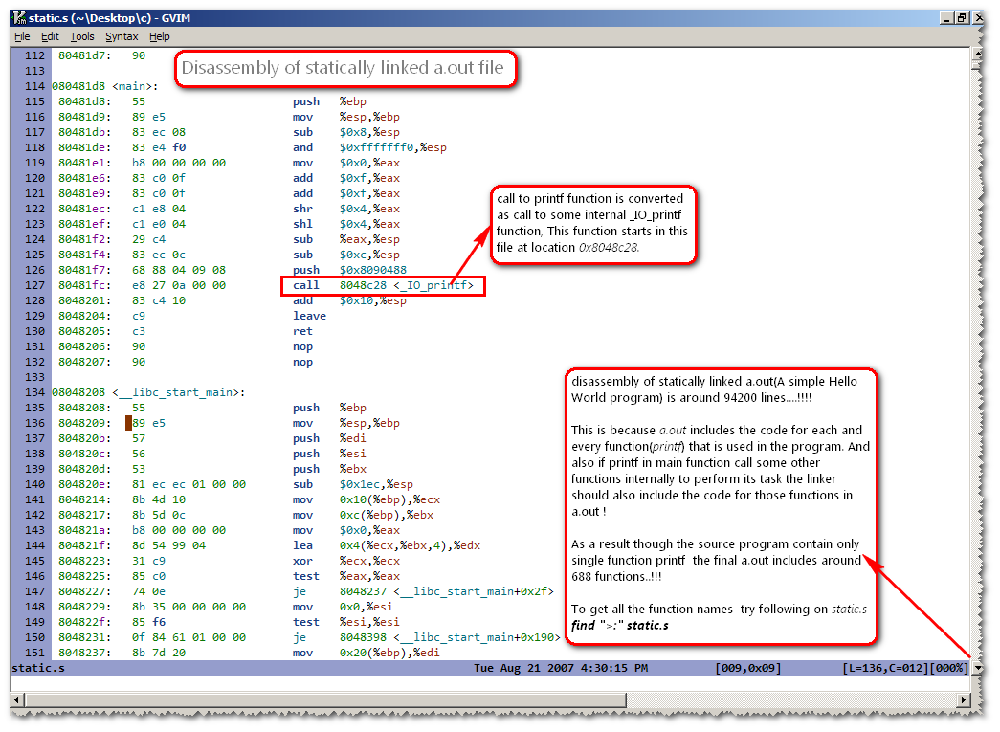

Linking
Linking is the process of rearranging(relocating) the functions from various object files(*.obj or *.o) and library files(*.lib) in to a single exe or a dll file. But the real crux of linking lies in the word rearranging or more precisely relocating
To understand it first shout the word relocate as "re locate" !
Consider two programs test1.c test2.c whose contents are shown below.
//test1.c //test2.c
main() test2()
{ {
printf("main() of test1.c"); printf("test2() of test2.c");
test2();
} }
Assemble these two files using the command
gcc -c test1.c test2.cto produce test1.o and test2.o. Now disassemble these two files using objdump.exe using the command
objdump -d test1.o test2.o > outfileand open outfile in Vim(any editor you like but Vim is colorful :) ).
Output from objdump.exe after Disassembling test1.o and test2.o (viewed in Vim)
From the above picture it is clear that instructions in every object file starts with memory location Zero no matter how many functions it may contain. And from the code of test1.c and test2.c it is clear that the function test2() of test2.c(which is actually present in test2.o) is being called by main() function in test1.c( which is actually located in test1.o)
So when the final exe is created by the linker, it actually copies the code of main(), test2() from test1.o and test2.o respectively. These functions are re arranged in different locations according to the convenience of the linker and this process is called relocating.
To understand what linking does, issue the following command on the files test1.o and test2.o
gcc test1.o test2.o
The above command creates the final exe with name a.exe. Now disassemble it using the command objdump -d a.exe to see its contents.
But this time to our surprise the output is around 800 lines ! The reason for this burst in the a.exe size is due to the presence of some Startup and Finalizing routines beside main() and test2(). Of all the Startup and Finalizing functions we are concern only with
___mingw_CRTStartup()
In the figure below we can observe that ___mingw_CRTStartup() is responsible for calling the function main() in Line 149 priorer calling main() it also does some startup routines like allocating the Heap Memory for the program using HeapAlloc Win32 API function and retrieving the command line arguments e.t.c ( stripped off). Once the main() function is returned there is call to ExitProcess Win32 API function(_ExitProcess@4 is the mangled form of ExitProcess) with return value of main() as argument. This function causes the current process to terminate.
From the disassembly of a.exe we can understand that linker also include other functions which are necessary for running the program beside test(),main()
Output from objdump.exe after Disassembling a.exe(stripped unnecessary code)
Besides relocating the functions, Linking also does various other tasks to create an exe file, Like incorporating the symbol table, debug information, exported functions, imported functions e.t.c.(explaining these concepts is beyond the scope of this tutorial and requires a firm understanding of the structure of a PE(EXE) file)
Linking is of mainly two types- Static Linking
In static linking the code for library functions(printf) is binded to the final exe. To understand this senario consider the following code snippet.#include<stdio.h> main() { printf("Hello World...- Vineel!!!"); }compile the above code with the command
gcc -static test.c
and you can observe the size of a.out is around 4MB ! This is because the functions(printf) present in test.c are linked statically, What i mean by statically linked is the entire code for printf function is duplicated from C Runtime libraries(glibc) in to a.out. As a result the size of statically linked files will be large.The advantage of static linking is, a.out requires no external libraries for running. But the biggest disadvantage is
- Increase in the size of final executable
- Duplication of common library routines in each and very executable.

Disassembly of statically linked a.out (objdump -d a.out > static.s)
-
Dynamic Linking
Dynamic linking overcomes the disadvantages of static linking. It does not duplicate the code from C Runtime libraries in final executable, As a result the file size is very less compared to statically linked onces.
It simply refers to the location where that function(printf) is present in Runtime Libraries(glibc or msvcr71.dll). So when the executable is run the loader of the operating system resolves the functions that are external to this executable. If the loader fails to do so, the program is terminated by the Operating System.
By default when ever you compile a program using the command
gcc test.cgcc creates dynamically linked executables.